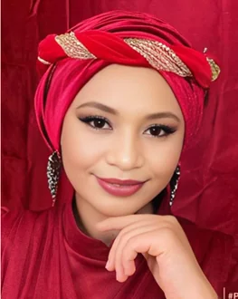
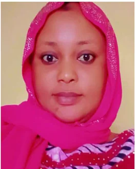

Education and opportunity
We support young people and women through education, vocational training and opportunities to earn a living.
The Murtala Dantoro Foundation is a Nigerian nonprofit working with communities to improve access to education, healthcare and economic opportunity.
For families in the communities we serve, finding work, learning a trade or reaching basic services can be a daily challenge. The foundation brings people and resources together to address those needs.
Our work connects education and skills training with practical improvements to schools, water supplies and community health services. We have offices in New Bussa and Abuja.
We support young people and women through education, vocational training and opportunities to earn a living.
We work with residents on local priorities, including entrepreneurship, leadership and the facilities people use every day.
We encourage access to healthcare, equal opportunities and a stronger voice for residents in decisions about their communities.
Programme Manager
Head of Contact Mobilisation
Programme Officer
Project Manager

Human Resources
Secretary
Media and Publicity Secretary

Head of Finance
Grants Officer
Ask the team about the needs of a project, the use of a contribution or a concern about a foundation activity. Include the programme name or location so the team can direct your enquiry.
Contact the teamExplore photographs and videos from the foundation’s community activities.